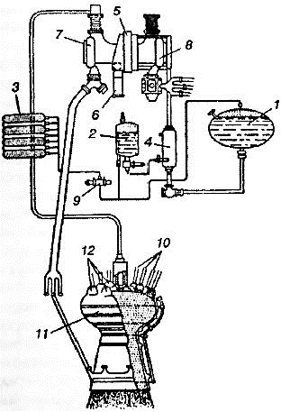

История Пенемюнде
Что бы ни говорили сторонники теории исторического детерминизма, мировая история демонстрирует нам множество примеров того, как совершенно случайные факторы влияют на ее ход. Так, первые большие ракеты появились у немцев только потому, что в Версальском договоре, накладывающем ограничения на виды войск и вооружений, которые могла иметь Германия после поражения в Первой мировой войне, ничего не было сказано о ракетах. А созданы они были в местечке Пенемюнде, о существовании которого главный конструктор этих ракет знал только потому, что его отец когда-то охотился там на уток.
Немецкая сухопутная армия, а точнее, специалисты отдела баллистики и боеприпасов управления вооружений сухопутных войск много думали о ракетах. Жидкостные ракеты давали, по крайней мере теоретически, возможность стрелять дальше, чем это делала артиллерия. К тому же теория утверждала, что ракеты в отличие от самолета будут практически неуязвимы в полете. Именно этими обстоятельствами и было продиктовано решение, принятое в 1929 году, о возложении на отдел баллистики ответственности за разработку ракет.
Не будет большим преувеличением сказать, что задача, поставленная отделу, была почти невыполнима. Ведь не имелось ничего, чем можно было бы руководствоваться военным инженерам при конструировании ракет. Ни один технический институт в Германии не вел работу в области ракет, не занималась этим и промышленность. Сотрудник отдела баллистики капитан Горштиг, ведавший организационными вопросами, долго не мог найти такого изобретателя, который при значительной финансовой помощи мог бы дать какое-либо законченное изобретение.
В 1930 году в помощь Горштигу был назначен новый человек — профессиональный офицер, служивший в тяжелой артиллерии во время Первой мировой войны. Этим человеком был гауптман Вальтер Дорнбергер. Однажды, присутствуя на испытательных запусках в «Ракетенфлюгплатц», Дорнбергер уговорил доктора Хейландта, директора фирмы «Ассоциация по применению промышленных газов», на которого некогда работал Макс Валье, сконструировать небольшой жидкостный ракетный двигатель, чтобы применять его для испытания различных топливных смесей. Когда разработка началась, Дорнбергер понял, что управлению вооружений так или иначе придется взять на себя выполнение этой задачи и перенести работы на свои испытательные стенды. Эта идея получила одобрение, и вскоре на артиллерийском полигоне в Куммерсдорфе, в 27 километрах от Берлина, была создана новая испытательная станция. Она называлась экспериментальной станцией «Куммерсдорф — Запад». Начальником ее был назначен Дорнбергер, получивший к тому времени звание оберста.
Первым штатским служащим станции стал Вернер фон Браун, вторым — способный и талантливый механик Генрих Грюнов. В ноябре 1932 года к ним присоединился и специалист по ракетным двигателям Вальтер Ридель.
Деятельность экспериментальной станции «Куммерсдорф — Запад» началась с постройки здания для испытательного стенда В декабре 1932 года на стенде был установлен двигатель, подлежавший испытанию. Однако первая же попытка запустить его окончилась неудачей — двигатель взорвался. Последовал полный разочарований год тяжелой работы: ракетные двигатели прогорали в критических точках; пламя факела шло в обратном направлении и воспламеняло топливные форсунки; встречались большие механические трудности. Но между этими неудачами случались и успешные испытательные запуски, которые показывали, что данную ракету можно заставить работать. Наконец в 1933 году наступило время проектирования полноразмерной ракеты. Условно она была названа «Агрегат-1» («Agregat-1»), или «А-1».
Дорнбергер считал, что ракета должна стабилизироваться вращением. Поэтому было решено создавать ракету с вращающейся боевой частью и невращающимися баками. В ракете «А-1» вращающаяся секция весом 38,5 килограмма помещалась в носовой части длиной 1402 миллиметра и диаметром 305 миллиметров. Около 38,5 килограмма топлива должно было подаваться под давлением сжатого азота из топливных баков в камеру сгорания двигателя, развивавшего тягу порядка 295 килограммов. Камера сгорания в хвостовой части ракеты была встроена в бак с горючим. Вращающаяся часть, изготовленная по типу ротора трехфазного электромотора, должна была раскручиваться до максимальной скорости перед самым запуском. Ракету «А-1» предполагалось запускать вертикально с направляющей высотой в несколько метров.
Согласно первому проекту, стартовый вес ракеты «А-1» составлял 150 килограммов. Соответственно этому был разработан и двигатель, но в процессе его доводки и работы над аэродинамической формой ракеты тяга двигателя увеличилась до 1000 килограммов. Разумеется, для такого двигателя, была нужна и новая ракета с более вместительными баками. Это означало, что нужен новый испытательный стенд, так как старый оказался для нового двигателя слишком мал.
К декабрю 1934 года были изготовлены две новые ракеты типа «А-2», названные в шутку «Макс» и «Мориц» по именам популярных в Германии комиков. Обе они были перевезены на остров Боркум в Северном море и запущены незадолго до рождественских праздников. Они поднялись на высоту 2000 метров, причем тяга обеспечивалась не новым, а старым 300-килограммовым двигателем.
Следующая ракета была названа «А-3». Территория испытательной станции в Куммерсдорфе оказалась недостаточной для обеспечения новых работ. Необходимо было сменить место, и после недолгих поисков фон Браун нашел его. Этим местом стал остров Узедом на Балтике, расположенный недалеко от устья реки Пене.
К этому времени уже был спроектирован, построен, испытан и окончательно доработан новый двигатель с тягой в 1500 килограммов. В марте 1936 года генерал Фрич приехал в Куммерсдорф и, увидев воочию работу экспериментальной станции, дал новые ассигнования. Затем в апреле 1936 года у генерала Кессельринга состоялось совещание, результатом которого явилось решение создать новую испытательную станцию. В тот же день советник Министерства авиации выехал в город Вольгаст, муниципалитету которого принадлежала территория Пенемюнде, и сообщил о том, что купил ее.
Хотя новая станция и получила название армейской экспериментальной станции «Пенемюнде», фактически равноправными хозяевами ее были сухопутная армия и ВВС. Армейцам отводилась лесистая часть острова восточнее озера Кельпин, ее назвали «Пенемюнде — Восток». Представители ВВС облюбовали себе пологий участок местности к северу от озера, где можно было построить аэродром, эта часть получила название «Пенемюнде — Запад». Станция «Пенемюнде — Восток» находилась в подчинении Управления вооружений сухопутных войск, а «Пенемюнде — Запад» — в ведении отдела новых разработок Министерства авиации.
В то время как строился исследовательский центр в Пенемюнде приближалась к концу и работа над ракетами «А-3». Ракета «А-3» имела высоту 6,5 метра и диаметр 70 сантиметров. Ее носовая часть была заполнена батареями. Под ними размещался отсек с приборами, в число которых входили барограф и термограф с миниатюрной автоматической кинокамерой, фотографировавшей в полете их показания. Имелось также аварийное устройство отсечки топлива, действовавшее с помощью сигнала по радио. Ниже отсека с приборами был расположен бак с кислородом, внутри которого помещался меньший бак с жидким азотом. Затем шел отсек с парашютом, потом бак с горючим и, наконец, ракетный двигатель. Четыре пера хвостового стабилизатора своими нижними концами крепились к кольцу из пластмассы диаметром 254 миллиметра. Полный стартовый вес ракеты составлял 750 килограммов.
Ракета «А-3» была снабжена двигательной установкой тягой 1500 килограммов. Как и у ракеты «А-2», двигатель работал на жидком кислороде и спирте, однако баллон со сжатым азотом, который применялся для подачи топливных компонентов под давлением в ракете «А-2», был заменен системой, использующей жидкий азот, выпариваемый с помощью группы тепловых сопротивлений. Это позволило значительно снизить вес системы.
Кроме того, в ракете «А-3» имелась гиростабилизированная платформа с акселерометрами для корректирования ракеты в полете по тангажу и по курсу, а также электрические сервомоторы и молибденовые газовые рули. Система наведения и управления основывалась на идеях некоего Войкова, который в то время являлся «экспертом № 1» военно-морского флота в области корабельного гиростабилизированного оборудования для управления огнем.
Испытательные запуски трех ракет «А-3» были проведены осенью 1937 года. Хотя двигательная установка работала в соответствии с расчетами, система наведения во всех трех запусках не оправдала возлагавшихся на нее надежд. Проверка показала, что газовые рули «А-3» слишком малы, реакция сервосистемы на сигнал управления чересчур замедленна, датчики условий полета и ввод данных в систему управления весьма несовершенны.
Создание газовых рулей имеет длинную историю. Уже давно было ясно, что аэродинамические рули, устанавливаемые в воздушном потоке, не могут решить задачу регулирования направления движения ракеты на всей ее траектории. Плотность воздуха достаточна для работы аэродинамических поверхностей управления только на высоте не более 15 километров. Но поскольку предполагалось, что ракеты будут выходить из плотных слоев атмосферы, необходимо было придумать нечто новое.
К тому времени было уже известно, что если воздушный поток крайне непостоянен и изменчив как по скорости, так и по направлению, то струя истекающих из ракеты газов весьма постоянна по своим характеристикам. Это навело на мысль, что поверхности управления можно установить в струе истекающих газов. Впервые подобное предложил еще Циолковский. Позднее в своей работе эту проблему весьма подробно рассмотрел Оберт. Он особенно подчеркивал, что «газовые рули» должны действовать путем сжатия этой струи своими плоскими поверхностями.
Уже в то время, когда ракета «А-3» находилась в стадии проектирования (лето 1936 года), Вернер фон Браун и Вальтер Ридель задумали создать гораздо большую ракету, которая в дальнейшем стала известна как ракета «А-4». Намеченная для этой ракеты дальность полета в 260 километров означала, что ракета должна иметь максимальную скорость порядка 1600 м/с. Вес боевой части определял сухой вес ракеты, и он должен был примерно равняться 3 тоннам. Для достижения необходимой максимальной скорости было нужно, чтобы вес топлива в два раза превышал сухой вес ракеты. Таким образом, стартовый вес ракеты следовало довести до 12 тонн, а это, в свою очередь, означало, что тяга ракетного двигателя должна составлять приблизительно 25 тонн.
По этим данным, можно было бы спроектировать большое количество совершенно разных ракет, но выбор габаритов определился довольно простым образом: требовалось доставить новое оружие вплотную к линии фронта, а следовательно, максимально допустимые габариты диктовались шириной туннелей и кривизной закруглений железнодорожной колеи.
В первом приближении характеристики ракеты «А-4» были обоснованы еще до того, как закончена ракета «А-3». Поэтому, прежде чем продвинуть эту большую работу сколько-нибудь дальше, необходимо было довести ракету «А-3» до приемлемого уровня. Практически же даже при сохранении прежних габаритов следовало создавать новую ракету. Старое название «А-3» также не годилось, и новая ракета получила обозначение «А-5».
Ракета «А-5» имела первый вариант двигателя ракеты «А-3» с большими графитовыми газовыми рулями и усовершенствованным корпусом, которому была придана почти такая же аэродинамическая форма, как и у более поздней ракеты «А-4». И что важнее всего — ракета была снабжена принципиально новой системой управления.

Первая ракета «А-5» была запущена осенью 1938 года, но пока без системы управления. Только через год, когда уже шла война с Польшей, «А-5» стартовала с полным оборудованием и безупречно поднялась на высоту 12 километров. Всего было сделано 25 пусков ракет «А-5»: сначала они запускались вертикально, а затем — по наклонной траектории. Все ракеты имели по два парашюта: вытяжной парашют, который мог раскрываться даже на околозвуковых скоростях, и основной парашют, вытягивавшийся через 10 секунд после первого, уменьшали скорость падения примерно до 14 м/с. Ракеты «А-5», как и ракеты «А-3», запускались с острова Грейфсвальдер-ойе. Система возвращения ракет на землю с помощью парашютов работала вполне надежно, поэтому многие ракеты удавалось запускать несколько раз.
К этому времени основные силы Пенемюнде были сосредоточены на «Большой ракете» — той самой ракете, которая преждевременно была названа «Агрегат-4». Именно она позднее стала называться ракетой «Фау-2» — «ракетой Гитлера».